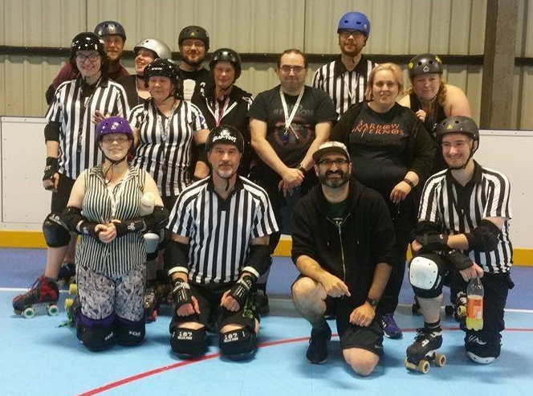
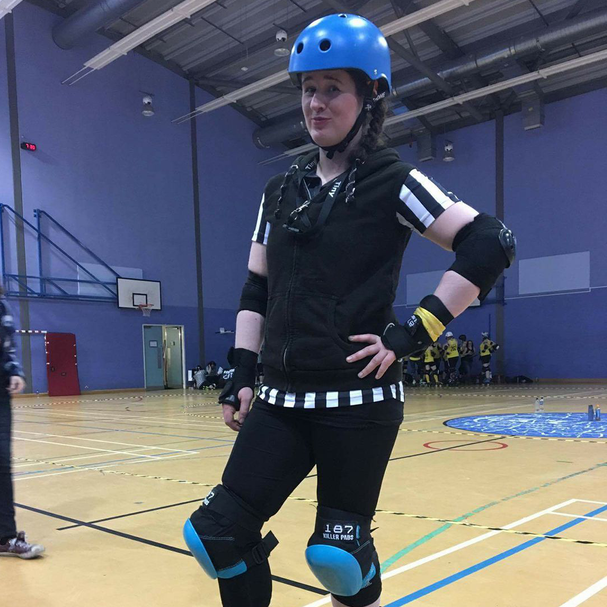
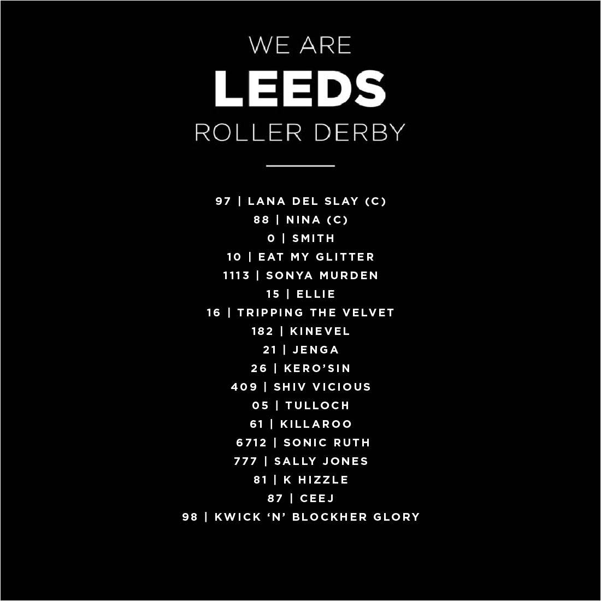

Non-US/Canadian Derby Roundup: 2/3 September Edition
As is traditional, we’re bringing you another roundup of the upcoming Roller Derby this weekend from across the world. As always, we’re using Flat Track Stats for much of this information – for regions with less good coverage, we also do a bit of intensive searching using a tool which scans the Facebook events of Roller Derby leagues known to Derby Listing.
Predictions of bouts are from FTS, if possible, and from our own SRD Rank where FTS cannot make predictions (for example: Latin America, or non-MRDA men’s bouts). (SRDRank also has recent WFTDA rankings, including the 31st June ranking, as well as SRDRank, and allows you to make predictions from them.)
If we’ve missed you from our roundup, please let us know! [Or add yourselves to FTS and/or Derbylisting]
Scotland
This weekend Scotland has one league hosting at home, and one away (further down this list):
- Aberdeen: Granite City Roller Derby host a double header, as the Northern Fights play Glasgow Roller Derby [FTS], and the Fight Hawks play Team EPIC, a trans-Scotland mashup team [EVENT]
- Dundee: Team Scotland Roller Derby are playing an open-subscription challenge team as they step up their training for the Roller Derby World Cup [EVENT]
UK
British Champs is approaching the end of the season with only playoffs left to go. As such, there are no Champs bouts this weekend.
Outside of Champs there’s a few things going on:
- Friday, Widnes, England: North Cheshire Victory Rollers host their Friday Fix open collaborative training, with Liverpool Coed Roller Derby [EVENT]
- Nottingham, England: Hellfire Harlots host Track Attack, the European Tournament featuring: [FTS Tournament][EVENT]
- Nottingham Hellfire Harlots
- Dundee Roller Girls
- Brussels Derby Pixies
- Leeds Roller Derby
- [Dundee are also listed on FTS as playing the Hell's Belles from Hertfordshire...]
- Sheffield, England: Sheffield Steel host a unique fundraiser, hosting a Roller Disco bootcamp, in collaboration with the Superfunk team [EVENT]
- Swansea, Wales: Swansea City Roller Derby also host a unique Fundraiser - a traditional British sports day (with Egg-and-Spoon races etc) [EVENT]
- Sunday, Medway, England: Apex Predators are hosting an open day / recruitment (all genders) [EVENT]
- Sunday, Kent, England: Kent Roller Girls are hosting an open day / recruitment event [EVENT]
- Sunday, York, England: York Minxters recruitment event starts their intake and training scheme! [EVENT]
- Monday, Oxford: Oxford v Norfolk Brawds is listed on FTS, but is probably a closed bout? [FTS]
Europe
In Europe, there's a lot of end-of-season recruitment going on:
- Friday, Copenhagen, Denmark: Copenhagen Roller Derby are holding their fresh meat recruitment event, recruiting into a 4 month intro to derby class [EVENT]
- Friday to Sunday, Darmstadt, Germany: Riot Rollers Darmstadt host their Weekend on Wheels bootcamp, with sessions from newbies all the way through to intermediate level skaters. Coaches are drawn from the Team Germany Men's (Psycho Crusher and Lukomotive) and Team Norway (Heidi and Pooky) rosters! [EVENT]
- Friday, Dublin, Ireland: Boomtown Rollers are holding a Harry Potter themed quiz fundraiser [EVENT]
- Aalborg, Denmark: Aalborg Roller Derby host an 80s themed double header - Aalborg Combat Bullies versus Norrköping B (Blockwork Orange) [FTS], and then Norrköping against Midtdanmarks Tæver (a fusion of Roskilde and O-Town (Odense) roller derby).[EVENT]
- Paris, France: Paris Rollergirls' Summer Workshops continue for those wanting to learn derby and join PRG [EVENT]
- Bremen, Germany: Meatgrinders Bremen host a full evening of derby: a Sur5al tournament, followed by Roller Disco [EVENT]
- Hannover, Germany: Demolition Derby Dolls Hannover host a double header: the hosts v Münster's Zombie Rollergirls, a Bundesliga div 2 bout [FTS tournament]; and a men's bout as DHR Men's Derby take on Wirral's Pack Animals! [FTS][EVENT]
- Stuttgart, Germany: Stuttgart Valley are listed as playing Ruhrpott for a 1st div Bundesliga bout, but there's no evidence outside of FTS [FTS tournament]
- Schwarzenbach, Italy: Alp'n Rockets are hosting a recruitment day - being located in Bolzano, close to the Austrian and Swiss borders, this seems to be a trilingual event![EVENT]
- (Sat+Sun) Stavanger, Norway: Oil City Rollers host their recruitment/open training event for those interested in the sport - there are two sessions, on Sat and Sun[EVENT]
- Las Palmas, Spain: Las Palmas Roller Derby host a musical fundraiser, with a raffle for Sailor Jerry's rum... [EVENT]
- Luzern, Switzerland: the Hellveticats host Dijon's Velvet Owls for a bout [FTS][EVENT]
- Växjö, Sweden: Växjö Roller Derby host a recruitment event (which explicitly says they'd welcome new referees and NSOs as well as skaters) [EVENT]
- Sunday, Mikkeli, Finland: Mikkeli Roller Derby host an open skate [EVENT]
- Sunday, Saint-Gratien, France: Roller Derby Panthers host a recruitment event, with demonstration bout [EVENT]
- Sunday, Rouen, France: Drakk'Arrd - Association Rouen Roller Derby host a recruitment event! [EVENT]
- Sunday, Sarreguemines, France: Roller Derby Sarraguemines' Mechanical Dolls are... also recruiting! [EVENT]
- Sunday, Vicenza, Italy: Roller Derby Vicenza have a stall at the Vicenza Ramp Crew meetup, featuring (amongst other things) a beer-pong challenge system! [EVENT]
- Sunday, Setubal, Portugal: Almada's Liberty Dolls, Coimbra's Rocket Dolls, Leiria's Black Rebels, Lisbon Grrrls Roller Derby and Lisboa Roller Derby Troopers are combining forces for a demonstration derby bout at the Festa do Avente [EVENT]
- Monday, Erfurt, Germany: Roller Derby Erfurt are hosting a try-derby session for Recruitment [EVENT]
- Monday, Bray, Ireland: East Coast Cyclones hold their recruitment event [EVENT]
- Monday, Arnhem, Netherlands: Arnhem Fallen Angels hold their recruitment/open training event [EVENT]
- Monday, Sundsvall, Sweden: Sundsvall Demolition Rollers are also hosting a derby open session / recruitment event [EVENT]
- Monday, Borås, Sweden: Stitch City Rollers... are, yes, hosting a derby open day / recruitment [EVENT]
Pacific
In Australia and New Zealand:
- Friday, Mount Maunganui, New Zealand: Mount Militia Derby Crew host an open scrim [EVENT]
- Newcastle, Australia: Newcastle Roller Derby League hold round 6 of their current home teams tournament, Harbour Hellcats playing Bogey Rollers for a place in their final [EVENT]
- Canberra, Australia: Canberra Roller Derby League host a superhero themed trivia night [EVENT]
- Bateau Bay, Australia: Outcast Derby host a double header, as the hosts play Blue Mountains Roller Derby [FTS], followed by a coed/Open To All mashup bout [EVENT]
- Toowoomba, Australia: Toowoomba City Rollers host a double-header, as TCR Juniors (Range Rascals) take on Coffs Coast Juniors, followed by TCR Coed/Mixed (Quad Squad) versus Coffs Coast Hot Mess [EVENT]
- Westbury, Tasmania: Devil State Derby League host a triple header - Van Diemen Rollers versus South Island Sirens [FTS], South Island Sirens versus Inner West Roller Derby League [FTS], and Devil State versus Inner West Roller Derby [FTS] [EVENT]
- Wellington, New Zealand: Richter City hold their next home teams bout, as
Comic Slams and Brutal Pageant face off [EVENT]
- Mount Maunganui, New Zealand: Mount Militia Derby Crew host a quiz night fundraiser [EVENT]
Latin America
In Latin America, there's the usual tournament and other things :):
- Friday-Sun : 2x4 Roller Derby are off to WFTDA Div 1 Playoffs (see below for the official Playoff event) [EVENT]
- Chile: Tacones Banditos are hosting the second fixtures in Torneo X, the Chilean Roller Derby tournament. Competing are: [FTS Tournament][EVENT]
- Adrenaline Roller Derby
- Deskarriadas
- Chillanrolleras DerbyClub
- Roller Derby Valdivia
- Tacones Bandidos Roller Derby
- Diosas Volcánicas
- (Sat+Sun) Celaya, Mexico: Roller Derby Celaya's Delicious Wheels host the next fixtures in the National Mexican Roller Derby Tournament. [FTS Tournament][EVENT]
- Sunday, Buenos Aires, Argentina: Sailor City Rollers are recruiting via a tryout session [EVENT]
Africa and Middle East
- Cape Town, South Africa: Cape Town Rollergirls' home season finale pits the
Rev'ettes and the Storm Riders against each other for the 2017 championship! [EVENT]
International Events
Late 'n' Lite #5
Dundee Roller Girls' are hosting their fifth installment of their Late 'n' Lite Referee and NSO bootcamp! On the 28th August at 7pm untill 10pm all in the very lovely Manhattan Works and all for only a fiver!
 Late n Lite Attendees!
This time they will be focusing on how officials, on or off skates, can work together as a team. Working on communication and how each individual contribute to the smooth (and safe!) running of the game. With the off skates session covering the ever popular position of Penalty Tracking!
To round the night off DRG's officials will be inviting you to take these newly hones skills onto the track as the bootcamp officiates Dundee's very own skaters in a wee intraleague scrim!
One half of Dundee Roller Girls' Head of Officials, Tiny Tearaway, had this to say about the bootcamps. Catch her and the other DRG refs in teaching action on the 28th!
 Tiny Tearaway - "We really love being able to run these bootcamps, having our officiating pals over to Dundee and being able to not only host an off skates workshop, but also an on skates one, with the added scrim, is such a great experience. I'm really grateful to help set these up and be a part of it all." (Image Courtesy: Allyson Jane-Foster)
Event page: Here August 28th 7pm - 10 pm Manhattan Works, Dundee £5
Non-US/Canadian Derby Roundup: 26/27 August Edition
As is traditional, we’re bringing you another roundup of the upcoming Roller Derby this weekend from across the world. As always, we’re using Flat Track Stats for much of this information – for regions with less good coverage, we also do a bit of intensive searching using a tool which scans the Facebook events of Roller Derby leagues known to Derby Listing.
Predictions of bouts are from FTS, if possible, and from our own SRD Rank where FTS cannot make predictions (for example: Latin America, or non-MRDA men’s bouts). (SRDRank also has recent WFTDA rankings, including the 31st June ranking, as well as SRDRank, and allows you to make predictions from them.)
If we’ve missed you from our roundup, please let us know! [Or add yourselves to FTS and/or Derbylisting]
Scotland
This weekend Scotland has a bunch of stuff happening (and one team doing international things, which you can find at the bottom of this article):
- Friday (and Sunday), Aberdeen: Granite City Brawlers host a series of taster / tryout sessions for anyone wanting to join Aberdeen's Open-To-All team [EVENT]
- Blackburn (West Lothian): New Town Roller Girls host their "Sheroes v Slamazons" open-subscription women's derby bout [EVENT]
- Sunday, Elgin: Helgin Roller Derby are having a try derby/recruitment day [EVENT]
- Monday, Dundee: Dundee Roller Girls host another of their semi-regular Late 'n' Lite Referee and NSO Bootcamps - this one focussing on communication. [EVENT]
UK
British Champs is approaching the end of the season, with only the Tier 2 North, thanks to a postponed game, with fixtures remaining, outside playoffs:
- Birmingham, England sees the last fixtures in the Tier 1, as hosts Birmingham Blitz Dames, and Leeds Roller Derby, both play London B, the Brawl Saints, and Bristol Roller Derby take on current-table-toppers Middlesbrough Roller Derby [FTS Tournament][EVENT]
Outside of Champs there’s a few things going on:
- Friday, Widnes, England: North Cheshire Victory Rollers and Liverpool Coed Roller Derby join forces to offer a collaborative open session [EVENT]
- Herne Bay, Kent, England: Kent Roller Girls host Cartoonapalooza, a rookie women's Roller Derby Sevens tournament [EVENT]
- Oldham/Manchester, England: Rainy City Roller Derby B, the Tender Hooligans, host Finland's Kallio Rolling Rainbow B [FTS][EVENT]
- Sunday, Durham, England: Durham City Rolling Angels are holding a recruitment day [EVENT]
- Sunday, Brighton, England: Brighton Rockers Roller Derby are hosting their own Sevens tournament! [EVENT]
- Sunday, Cardiff, Wales: Tiger Bay Brawlers host an open scrim for Cardiff Pride [EVENT]
Europe
In Europe, there's a lot of end-of-season recruitment going on:
- Montreuil, France: Les Nasty Pecheresses are holding a recruitment event [EVENT]
- Berlin, Germany: Berlin Rollergirls and Bear City Roller Derby host another double-header, as Berlin Rollergirls take on Leipzig's Riot Rockets in a Bundesliga Division 3 bout [FTS Tournament], followed by Bear City C (the Breaking Bears) playing Prague's Hard Breaking Dolls [FTS][EVENT]
- Darmstadt, Germany: Riot Rollers Darmstadt are holding a "try derby" day [EVENT]
- Ruhrpott, Germany: RuhrPott Roller Girls host a Bundesliga Division 1 bout against Roller Derby Dresden [FTS Tournament][EVENT]
- Munich, Germany: Munich Rolling Rebels are also recruiting [EVENT]
- Gothenburg, Sweden: Dock City Rollers are holding their recruitment day too! [EVENT]
- Rimini, Italy: Rimini's Stray Beez invite you to a summer workout on the beach. [EVENT]
- Albino, Italy: Bergamo's Crimson Vipers invite you to Rock Me All Night Long, a rock music fundraiser [EVENT]
- (sat+sun) Copenhagen, Denmark: Copenhagen Roller Derby are holding their free "try derby" / tryouts weekend, for both Juniors and Adults [EVENT]
- Sunday, Paris, France: Les Gueuses de Pigalle hold their recruitment day [EVENT]
- Sunday, Namur, Belgium: Namur Roller Derby host a "friends and family day" for recruitment and outreach [EVENT]
- Sunday, Dresden, Germany: Roller Derby Dresden are recruiting into their training course [EVENT]
- Sunday, Norrköping, Sweden: Norrköping Roller Derby are... yes, recruiting, with a try out day[EVENT]
- Sunday, Bern, Switzerland: Bern's Bonebreakers Roller Derby are doing the populat thing this weekend, and holding a recruitment/tryout day [EVENT]
- Sunday, Galway, Ireland: Galway City Roller Derby hold an open skate day [EVENT]
Pacific
In Australia and New Zealand:
- Friday, Windsor, NSW, Australia: Hawksbury/Hills Area Roller Derby are recruiting with an open day [EVENT]
- (sat+sun) Melbourne, Australia: Kingston City Rollers host the 2017 United Roller Derby Playoffs, a 16 team, 2 division event running the whole weekend [FTS Tournament][EVENT]
- Sydney, NSW, Australia: Hawksbury/Hills Area Roller Derby are also at the 2017 Blacktown City Sportsfest, where they'll be involved in a roller derby demo [EVENT]
- Yeppoon, QLD, Australia: Yeppoon Roller Derby are hosting Rocky Roller Derby's Beef City Brawlers [FTS][EVENT]
- Auckland, New Zealand: fresh from WFTDA Division 2 Playoffs, Pirate City Rollers host a double header: a juniors bout debuting their new Juniors team (the Scallywags); followed by PCR Broadside Brawlers versus Mount Militia's B Company [FTS][EVENT]
- Palmerston North, New Zealand: Swamp City Roller Derby host Rotorua's Sulphur City Steam Rollers for a bout as part of the New Zealand Top 10 Tournament [FTS Tournament][EVENT]
- Campbelltown, SA, Australia: Murder City Roller Derby host their 5th bout of their home teams series, as the Slamazons play Valkyrie Storm [EVENT]
- Albany, WA, Australia: Albany Roller Derby League's Great Southern Breakers take on Margaret River's Cabernet Savages [FTS][EVENT]
- Napier, New Zealand: Bay City Rollers host a double header, as their B-team Twisted Sisters play the West Coast Bombers [FTS], and their Iron Maidens take on Auckland Roller Derby League, a New Zealand Top 10 Tournament bout [FTS Tournament][EVENT]
- Sunday, Westbury, Tasmania: Devil State Derby League host an open-scrim for all mins passed skaters [EVENT]
- Sunday, Otautahi, New Zealand: Otautahi Roller Derby host their regular open scrimmage, open to all mins-passed skaters [EVENT]
- Sunday, Okinawa, Japan: Devil Dog Derby Dames host a disco v rock'n'roll themed home teams bout [EVENT]
Latin America
In Latin America, there's the usual tournament and other things :):
- Queretaro, Mexico: Queretaro Roller Derby host the first leg of the official Mexican Roller Derby Championships, over the weekend [FTS Tournament][EVENT]
- Sunday, Buenos Aires, Argentina: 2x4 roller Derby are hosting a fundraising party to raise travel costs to attend WFTDA Division 1 Playoffs in Seattle (and to see 2x4's Team OSOM off, as well). [EVENT]
- Sunday, La Plata, Buenos Aires, Argentina: Chat Noir bring you a double header, as the hosts take on Fawkes Roller Derby [FTS] and Alianza Rebelde play Buenos Aires Roller Derby [FTS] [EVENT]
- Sunday, São Paulo, Brazil: Ladies of Hell Town are hosting Meatmachine (of the Mato Grosso do Sul region) for a double header - one bout without contact, and one with! [EVENT]
- Sunday, Porto Alegre, Brazil: Wheels of Fire Roller Club hold their second recruitment day of the season [EVENT]
- Sunday, Lima, Peru: Toxic Lima Roller Derby host another home-teams event, as Terror de la Selva play Furia Marina [EVENT]
Africa and Middle East
- There are no events here to our knowledge this weekend.
International Events
A chat with: Team Middle East Roller Derby
After a break from podcast style interviews, Scottish Roller Derby podcasts are back with an interview with one of the co-chairs of new Men's Roller Derby National team, Team Middle East Roller Derby.
Team Middle East are actively recruiting for any skaters with eligibility to represent any of the Middle Eastern countries, with an aim to compete in the 2020 Men's Roller Derby World Cup. This would make them the first men's team representing any nations in the middle east, and only the second team representing a Middle Eastern Nation at all (after Team Iran Roller Derby - also still open to applicants - who will represent at the Women's Roller Derby World Cup 2018).
[soundcloud url="https://api.soundcloud.com/tracks/337873869" params="auto_play=false&hide_related=false&show_comments=true&show_user=true&show_reposts=false&visual=true" width="100%" height="450" iframe="true" /]
Non-US/Canadian Derby Roundup: 19/20 August Edition
As is traditional, we’re bringing you another roundup of the upcoming Roller Derby this weekend from across the world. As always, we’re using Flat Track Stats for much of this information – for regions with less good coverage, we also do a bit of intensive searching using a tool which scans the Facebook events of Roller Derby leagues known to Derby Listing.
Predictions of bouts are from FTS, if possible, and from our own SRD Rank where FTS cannot make predictions (for example: Latin America, or non-MRDA men’s bouts). (SRDRank also has recent WFTDA rankings, including the 31st June ranking, as well as SRDRank, and allows you to make predictions from them.)
If we’ve missed you from our roundup, please let us know! [Or add yourselves to FTS and/or Derbylisting]
Scotland
This weekend Scotland has a bunch of stuff happening (and one team doing international things, which you can find at the bottom of this article):
- Blackburn: Glasgow Men's Roller Derby host the 4th of their "Jammer Club" skills bootcamps [EVENT]
- Sunday, Inverness: Inverness City Roller Derby host their first ever home game, playing against a mashup team from Elgin's Helgin Roller Derby, Aberdeen's Granite City Roller Derby, Perth's Fair City Rollers, and Glasgow's Mean City Roller Derby [EVENT]
- Monday, Glasgow: Resistance Roller Derby, Glasgow's LGBT+ inclusive, accessible Junior Derby club, host the last of their Room To Grow events, where adult skaters scrimmage, and all train with the team itself. [EVENT]
UK
British Champs is approaching the end of the season, with only the Tier 1 (and Tier 2 North, thanks to a postponed game) with fixtures remaining after the coming weekend:
- Nottingham, England sees the Tier 2 Mens final fixtures (we think), as hosts Super Smash Brollers take on Wirral Pack Animals; whilst Barrow Infernos play Suffolk Men's Roller Derby [FTS Tournament][EVENT]
Outside of Champs there’s a few things going on:
- Sunderland, England: Sunderland Roller Derby host Newcastle Roller Girls' North Cs [FTS][EVENT]
- Sunday, Newark, England: Lincolnshire Bombers host a double header, with a Facebook event for each game. First off, there's an exhibition open-subscription intermediate game [EVENT]. This is followed by Lincolnshire Bombers taking on Sheffield Steel Rollergirls [FTS] [EVENT]
- Sunday, Durham, England: Durham Roller Derby are hosting a recruitment event [EVENT]
- Sunday, Hull, England: Deathrow Hull are celebrating their coach's 30th birthday with a Bond-villain themed coed tournament! [EVENT]
- Sunday, York, England: York Minxters are hosting their Rookie Scrim event [EVENT] , followed by "Meet the Minxters" recruitment [EVENT]
- Monday: for those not signed up, Rule 56's next series of Get Smarty Coaching webinars starts on the 21st (at times better suited for the USA, but also European nightowls). [EVENT]
Europe
In Europe, there's a lot of end-of-season recruitment going on:
- Thursday to Saturday, Charleroi, Belgium: Blackland K-Rollers hold a "learn to derby" short-course for 5 to 12 year olds [EVENT]
- Friday, Waterford, Ireland: Waterford City ViQueens are hosting a quiz night [EVENT]
- Paris, France: Paris Roller Girls have another recruitment event in their series [EVENT]
- Marburg, Germany: Maniac Monster Mainz host a double-header "scrimmage, with the hosts playing Erfurt's Gargörlz first; followed by Splatter Fairies Marburg versus Delta Quads Test Pilots Mannheim [EVENT]
- Stockholm, Sweden: Stockholm Roller Derby host Malmö's Crime City Rollers [FTS][EVENT]
- Monday, Charleroi, Belgium: Blackland K-Rollers (Charleroi's Junior Derby league) are recruiting, after their short course days before. [EVENT]
- Monday, Lappeenranta, Finland: LPR HCRollers host an open skate / try out derby session [EVENT]
- Monday, Reims, France: the Beastie Derby Girls host the second of their two recruitment days this season [EVENT]
- Monday, Annecy, France: Les Brütales Deluxe are having another outdoor skating session, which they invite people to join in with! [EVENT]
- Monday, Wicklow, Ireland: East Coast Cyclones are recruiting, with a try derby/ open skate session [EVENT]
- Monday, Borås, Sweden: Stitch City Rollers are hosting a try-derby/recruitment day [EVENT]
Pacific
In Australia and New Zealand:
- Friday, Hobart, Tasmania: Convict City Roller Derby League host their second home teams event of the season, as Wild Cats and Jail Birds compete in a "galaxy" theme. [EVENT]
- Osborne, Adelaide, Australia: Light City Derby host a double header, with home teams Medic Mayhem and Regimental Rollers facing off first; followed by Victoria Men's Roller Derby taking on Light City Men's (the Sabres) [FTS][EVENT]
- Nelson, New Zealand: the Sirens of Smash host Christchurch's Dead End Derby's Living Dead Rollers [FTS][EVENT]
- Brisbane, QLD, Australia: Brisbane City Rollers (Men's - the Scartel) host Sun State Roller Girls as both teams play Victorian Roller Derby's Queen Bees [FTS 1, 2][EVENT]
- Wauchope, NSW, Australia: Tweed Valley Rollers B (Valley Valkyries) host Port Macquarie Roller Derby's Breakwall Brawlers for a bout [FTS][EVENT]
- Wellington, New Zealand: Richter City Roller Derby host a double header, as Richter B play Dunedin Roller Derby's development squad, the Bonnie Brawlers [FTS], and Richter A take on Team New Zealand Men's Roller Derby! [FTS] [EVENT]
- Whangarei, New Zealand: The Northland Nightmares host a double header - Northland's Juniors (the Hell Razors) holding a junior bout to start, followed by the Hell Wives versus Levin's Whenua Fatales [FTS][EVENT]
- Preston, VIC, Australia: Victorian Roller Derby League host an open Black and White Scrim with "on track coaching" - each team will have a VRDL A Jammer and 2 Blockers to provide coaching and experience to the rest of the skaters. This has two sessions - Intermediate and Advanced [EVENT]
- Moonah, Hobart, Tasmania: Hobart Junior Roller Derby are hosting a "sausage sizzle" in late morning, providing a lunch for those passing by... [EVENT]
- Monday, Preston, VIC, Australia: VRDL host the last of their intakes for the season, in their final "Learn To Skate" starter session [EVENT]
Latin America
In Latin America, there's the usual tournament and other things :):
- Friday, Santiago, Chile: Metropolitan Roller Derby League are hosting a black v white scrim (or "pichanga" in Chilean Spanish), with a signup sheet. [EVENT]
- Celaya, Mexico: Roller Derby Celaya host a music-filled reggae/ska night, to raise funds towards hosting their part of the Mexican National Tournament. [EVENT]
- (Sat-Sun) Buenos Aires, Argentina: Sailor City Rollers host Piratas en el Asfalto 2017, a B/C category tournament featuring: [FTS Tournament][EVENT]
- 2x4 Roller Derby B (Las Pibas) [Argentina, B]
- Metropolitan Roller Derby B (Bayonetas) [Chile, B]
- Heidras Roller Derby [Argentina, B]
- Valkyrias Roller Derby [Colombia, B]
- Sailor City Rollers B (Tsunami Bombs) [Argentina, B]
- Dirty Fucking Dolls B (Rotten Vicious Dolls) [Argentina, C]
- Buenos Aires Roller Derby C (Cerdas) [Argentina, C]
- Sailor City Rollers C (Sea Monsters) [Argentina, C]
- Pájaros Pintados [Uruguay, C]
- Curtiba, Brazil: the Blue Jay Rollers are hosting a recruitment day [EVENT]
- Sunday, Buenos Aires, Argentina: 2x4 Roller Derby host a jammer bootcamp, followed by the chance to play 2x4 A (Team OSOM) afterwards. These events help to raise funds for 2x4 attending WFTDA Division 1 Playoffs next month. [EVENT]
Africa and Middle East
- There are no events here to our knowledge this weekend.
International Events
Our occasional section where we call out events in the USA which are relevant for the International competitors:
- From Friday, Pittsburgh, USA: WFTDA Division 2 Playoffs host a record number of non-US/Canadian teams, with Edinburgh's Auld Reekie Roller Girls; Dublin Roller Derby; Middlesbrough Roller Derby; Paris Rollergirls; Berlin's Bear City Roller Derby; and Auckland's Pirate City Rollers filling up for Europe and New Zealand. (It's also worth noting that all of the European teams here also appeared at EuroClash earlier in the year!) [FTS Tournament][WFTDA Tournament Page][SRD Multi-timezone Schedule]
A Slavic Tournament: how Central and Eastern European Derby exploded in just 3 years!
Several years ago, back in 2014, we talked to a few teams from Central and Eastern Europe for our series on "The Future of Derby". Three years later, what was very much the edge of the derby world has developed to the extent that all of those nations have teams at the Roller Derby World Cup in February, and some even have Men's teams aiming at the Men's Roller Derby World Cup.
Closer to hand, though, the world's first "Slavic Tournament" - featuring only teams from Slavic countries - is approaching next month, featuring: Prague City Roller Derby (Czech Republic), White Night Furies (Russia) and the hosts Warsaw Hellcats (Poland).
What better time, then, to catch up with the teams attending?
First, we had in depth interview with Prague City Rollers' Mörkö, following up on some of the topics we discussed with the league 3 years back when they were young!
 Mörkö
Mörkö
When we first interviewed Prague City, back in 2014, we asked if the Czech Republic would be competing in a World Cup by 2016. Obviously, the World Cup is a little later than we expected, but how does it feel for the Czech Roller Derby Team to be competing in 2018 - and how involved was Prague City, specifically, in making this happen?
It feels fantastic - we have been rolling in Czechia a little over 5 years now and even though we managed to get roller derby covered in the biggest Czech media houses we are still struggling with prejudice and ignorance of our sport. I hope that participating in the World Cup will become one of those milestone moments that will give us positive publicity, show the Czech public how great this sport can be or even just raise awareness, what roller derby is about and make our roller derby journey easier in Czech Republic.
As to how much was PCRD involved in the National team organisation - I can only speak for how I personally see it as a PCRD member. I'm not sure if there was any intention from other leagues, but I know there were rumours about us possibly participating in the World Cup around two years ago. It was still in its very beginnings, nobody was sure what exactly should be done, everyone had their own way of doing things which wasn’t always welcomed by others. However, we always wanted to co-operate with other leagues and not to do it just on our own. Since [Fellow Prague-based league] Hard Breaking Dolls became active we invited them to organise a board that would create a basic platform for hiring managers, coaches and other important figures, who are now active in the National team agenda. Most of them are from PCRD, we have a coach who used to be in Porto, but trains with PCRD, another one is from Vienna (soon moving and transferring to London) and that is pretty much it. Since we have been here the longest, we are trying to push our limits always a bit further even though if our league has to struggle for a while. We're inconceivably stubborn I think.
When we first interviewed the league, you were the only derby in the Czech Republic, and one of the few leagues in Central/Eastern Europe. Now, with the Hard Breaking Dolls (also in Prague), and Brno Roller Derby in the Czech Republic, and a growing set of leagues in Poland, Austria and beyond, it seems that Roller Derby is growing well in the Centre and East of Europe... How much work has it been to get derby this far in the Czech Republic, and where have the bumps been along the road?
It's really amazing to see roller derby grow all around us.
I'm especially happy for Poland who are our neighbours and, even though roller derby is still pretty new there, it gives us lots of potential for future cooperation. For example, in September, our B team will take part in the first Slavic Tournament in Warsaw; playing with Warsaw Hellcats and with Saint-Petersburg Roller Derby.
My personal dream is to have a roller derby league in Slovakia, but we are not able yet to build there a roller derby fortress. Even though PCRD is always happy to do exhibitions in other cities apart from Prague and people are contacting us all over the country to help them build a league, there is lots of work that many people from the outside don't realise or can't imagine. It was three years ago, that PCRD made an exhibition in Brno, but it wasn't until the last year when the team gained enough people to form a league and become active…
The politics of PCRD has changed over the course of 5 years as well. What started as a punk sport for underdogs is now a league aspiring to be seen as professional, athletic and serious at what it's doing. I think it's the same trend worldwide - roller derby has changed and so have we. We're basically following the trend and I think the work is paying off - media slowly starts to put us into the sports category, people are spreading the news, we are changing our approach along the way as we notice what does and doesn't work…
However, we’re still not perfect and still learning. I think our biggest ongoing struggle is our financial stability, which sometimes influences our participation in games or tournaments or organising bootcamps that could move us further, or even our entire existence. After 5 years, we lost our practice venue due to unbearable conditions given to us by the school where we used to practice. So now we're poor and homeless, but still going :D
I really admire the amount of work my teammates are putting into PCRD’s existence. I think what is really pushing us through is taking risks and having a good team of people who are not willing to give up. Even though it is sometimes frustrating having to stand in front of a new challenge every season, I know it will be for the better in the future.
Talking to some of those newer leagues in Eastern and Central Europe (and beyond - Estonia and Latvia...), they've all emphasised how important the support of other leagues has been in their growth. Do you think Support networks, and National (and Trans-national) bodies, are a really important thing for established leagues to "pay into"?
Oh absolutely! If you are a brand new league in your city or even country it is crucial that you have someone to ask for help. Our beginnings were dependent on getting equipment from Germany and advice from people who already knew how the game should look like. The YouTube videos, roller derby forums and a great community happy to share experience don’t beat a personal contact.
Roller derby is growing, but it's still new for many people. We gained a lot through people who visited our practices from all around the world willing to share useful information of any kind. I think it used to be our core source until we established some kind of a training plan and managed to educate ourselves on our own, even though we're not giving up on help from the outside; quite the contrary. Also, we're a little lucky being located in Prague which is a very popular tourist place even for roller derby community, so we have visitors quite often I have to say. I'm happy I could learn from people who played long before our league even started.
As we write these questions, Prague City has just been accepted into WFTDA as a full member. Can we talk a bit about how the journey from first applying, through Apprentice, to the announcement of Full Membership? What was the draw for joining WFTDA?
We started noticing how leagues around us were joining WFTDA and how it influenced our ability to organise games.
Most of our opponents come from Germany and since they have Bundesliga it was hard for us to compete with enough leagues who would find space for us in their bout schedule. Once we were refused by some leagues for whom we weren't that attractive we realised that WFTDA membership is a way to go. Of course it wasn't the only reason, but it was the one that pushed us into sending the application.
The application process is mostly a work of two of my amazing teammates, Lenka and Lulu, who took the responsibility and got us through the painful bureaucratic Apprentice parts. Our mock sanctioned bout was against Roller Girls of the Apocalypse from Kaiserslautern. It was a re-match that took place in Prague and I noticed how our bout organising skills were well balanced with WFTDA requirements. Everybody has been working hard so that no detail could show that we weren't eligible to gain the status of a full member. All paperwork was finished in the late spring this year and in the middle of July we were finally announced as a full member.
Speaking of Prague's development, you've had a very busy bouting schedule since we've spoken to you - with 8 games in both 2015 and 2016 (thanks partly to the Daga Denter tournament). FTS rates you as 140th in Europe (and we rate you a little higher, at 93rd, or 115th if you include B teams), with a pretty steady rise up the rankings since you were founded. How have you worked for this success?
It's a combination of hard work, sometimes luck (the attractiveness of Prague has indisputable role), and having dedicated teammates who are willing to sacrifice their time and money to attend practices and games. We do not count on having full roster unless we're sure everybody in the team knows how to play their role in the game the best. Because the team struggles with ongoing injuries of both A and B team players we sometimes have to improvise, but we learned that it's better to roster 10 players who are ready to give their best than 14, who might not be 100% ready yet.
It has something to do with our coach Jay who is used to this system from her home league in Porto. Once we saw her team play and win the Daga Denter tournament with not more than 9 people in her team two years ago we knew that it's possible to build a team on few people, who know each other well and meet at most practices than count on somebody, who might be talented but doesn't know how to co-work with others on the track. By various circumstances we were forced to choose quality over quantity and it paid off. But who knows how long will this strategy last, since there are some pretty amazing and talented players from the B team who I think will soon join the A team forces.
It's been a successful few years since we last spoke to Prague City... but what do you have planned for the next few, and where do you see Czech Roller Derby itself developing?
At the moment we're in the midst of a turmoil, actually. Our season has just started, we don't have much money, we have to practice outside with little luck finding a permanent venue for inside practices so unfortunately most of our energy goes into this right now.
But I'm not entirely negative, it's hard, but I know we will thrive and get through this eventually and be ready to compete and get better. So, I see ourselves in a nice hall made of polished concrete where we can comfortably practice twice or three times a week, having a busy bout schedule for both our A and B teams who establish their positions as fierce central Europeans of the roller derby world. I see the National team competing in an already lost game against Team USA having time of our lives, getting us enough coverage to have at least one or two more roller derby leagues outside of Prague!
We also more briefly caught up with St Petersburg's White Night Furies, and Warsaw Hellcats to talk more specifically about the Slavic Tournament.
White Night Furies (#2206 Hulk):
It's been a busy year for the Furies - tournaments in Finland [the Pohjola Cup], national teams [Team Russia Roller Derby] and promoting the sport in new countries [Belarus]! When we first interviewed you, years ago, did you expect any of this?
No way. I couldn't even imagine that all this will come SO far and spread so wide. But I can say that the goals that were in our heads years ago just turned into everything we have now and that means we're on the right way!
Mostly I am excited about Team Russia - making a team on an international level is a huge job, but thanks to White Night Furies now I know how things should be done.
How important is it, do you think, that landmarks like the first Slavic Tournament are achieved, and celebrated?
Since the time when the idea about making a Slavic Tournament came to my head, I really wanted it to happen. But this would've never happen without Warsaw, who wrote me a year ago and offered to participate in some of their games. We've had no free time at that time, but I started to think how we can roll :)
In my opinion, the countries that are close to each other should communicate more, cooperate and be good friends and not only, it's our chance to make a warm friendship with each other. And I hope this would be just the beginning of something big and sweaty :)
And, finally: how are you hoping to do at the tournament?
If we make a full roster this time, I'm sure we can take the lead !
Warsaw Hellcats:
How did you come to the decision to hold the first ever Slavic Tournament?
The idea actually came from White Night Furies. Around November last year, we as a team decided to kick it up a notch a little and start playing more. That's when we started making plans for next months and contacting a number of foreign teams, one of them were Furies. The dates we had weren't working for them, but they replied proposing to play during Autumn, and pointed out that we are both Slavic teams, so why not invite 3 Slavic teams and make it a themed event 
We don't talk as much about the growth of derby in Poland - how have the last few years been for Warsaw Hellcats since your founding in 2013?
Roller Derby has grown significantly over the last four years in Poland. We've achieved considerable progress.
Our team entered the WFTDA Apprentice program and we played our first mock game; a male team and the National women's and men's teams have both been formed to compete in the World Cups in 2018.
As the Warsaw Hellcats we try our best to play and host events at home to gain as much experience as possible and to get as many people as possible into the sport. We organize bootcamps and tournaments in which we invite derbies from all over the world and other polish cities, we want polish RD and polish teams to grow. We also try to participate in international events not only as players but also as NSO and SO. Still the problem is a training room, but we hope that with the growing awareness of the derby in Poland, it will be easier for us to pass.
The Slavic Tournament (Słowiański Trójmecz in Polish) will be held on the 30th of September, in Warsaw, Poland. There's no event page for it yet, but we will publicise it more closer to the time.
If you wish to officiate the Slavic Tournament, then there is an application form here: https://docs.google.com/forms/d/e/1FAIpQLSdmZYZzUjQH9mdzf12Z3hAEcfkfhwtAKXuBLjKU2j71Wk-GjQ/viewform
Leeds Roller Derby update: Tier 1 and beyond
Finally in our series of updates on the Northern Divisions of British Champs, we reach our Tier 1 representatives: Leeds Roller Derby.
Technically LeedsRD were new to Champs this time around, as this is their first year of competition. However, being formed from the merger of Leeds Roller Dolls and Hot Wheel Roller Derby, they have a lot of experienced skaters, and inherited LRD's position in Tier 1. The team were only just formed at the time of their first Champs games (and they are only just at the point of getting a new logo now), so this was always going to be a difficult competitive year for them.
 Leeds Roller Derby v Birmingham Blitz Dames Credit: Tallboy Images
Leeds Roller Derby v Birmingham Blitz Dames Credit: Tallboy Images
The final fixture for the Tier 1 comes in a few weeks, on the 26th August, as LeedsRD face London Brawl Saints, as do Birmingham Blitz Dames; whilst Bristol Roller Derby take on the season's likely champions, Middlesbrough Roller Derby. Sadly, the adjustments needed within LeedsRD have left them at the bottom of the table to date, but the team is positive about their rate of growth.
We talked to Leeds Roller Derby's A team co-captains, Nina and Lana Del Slay about their experience, and the future.
How has Champs been for you? Nina: It's been brilliant! As a brand new team we knew that tier 1 was going to be tough, and it has been, but we've loved it. Our first game against Tiger Bay was on 26 February - less than 8 weeks after our first ever training session as Leeds Roller Derby - and we had some key skaters out with big injuries early on. Of course it would have been amazing to have gone out there and smashed it but these are some of the best and most established teams in the country and that just wasn't going to happen - we were under no illusions about that. Lana: Back in February we said that our number one goal for the season was becoming a team, and we're really happy with how far we've come in just eight months. We've just announced our latest charter which we'll be choosing a roster for the Brawl Saints game from. We've played a few different skaters and there are a couple of new faces on this charter too. There's more and more competition for spots on the A team but also our B team too. It's exciting.
What plans do you have post-Champs? Nina: Our B team is playing Croydon away in September, which we're looking forward to... Lana: We're going to be celebrating 10 years of roller derby in Leeds in October which is a very big focus for us. There will be lots of events taking place to mark it, including the return of the Great Yorkshire Showdown, and we'll be unveiling our rebrand which we've all been working really hard on then too.
 The new LeedsRD A Team Roster
Tier 1 Final: 26 August, Birmingham https://www.facebook.com/events/1444426895600235/
Great Yorkshire Showdown: 7 October, Leeds, TBA
Non-US/Canadian Derby Roundup: 12/13 August Edition
As is traditional, we’re bringing you another roundup of the upcoming Roller Derby this weekend from across the world. As always, we’re using Flat Track Stats for much of this information – for regions with less good coverage, we also do a bit of intensive searching using a tool which scans the Facebook events of Roller Derby leagues known to Derby Listing.
Predictions of bouts are from FTS, if possible, and from our own SRD Rank where FTS cannot make predictions (for example: Latin America, or non-MRDA men’s bouts). (SRDRank also has recent WFTDA rankings, including the 31st June ranking, as well as SRDRank, and allows you to make predictions from them.)
If we’ve missed you from our roundup, please let us know! [Or add yourselves to FTS and/or Derbylisting]
Scotland
This weekend Scotland has one bout at home, but 2 teams representing:
- Edinburgh hosts the last games of the Tier 3 North, as hosts Auld Reekie B play North Wales Roller Derby, Aberdeen's Granite City Roller Derby take on Furness Roller Derby, and Halifax Bruising Banditas play Harrogate's Spa Town Roller Derby . [FTS Tournament][EVENT] (the hosts have a lot to play for, as the result of their game will determine if ARRG or NWRD join Granite City in the promotion zone for the division).
UK
British Champs is approaching the end of the season, with only the Tier 1 (and Tier 2 North, thanks to a postponed game) with fixtures remaining after the coming weekend:
- Leicester, England hosts the last games of the Tier 3 West; hosts Leicestershire Dolly Rockits playing Milton Keynes Roller Derby; Nottingham Roller Girls playing Wolverhampton Honour Rollers; and Sheffield Steel Rollergirls playing their neighbours, Hallam Hellcats [FTS Tournament][EVENT] (with Sheffield Steel safe in the top spot, it's for Hallam, the Dolly Rockits and the Honour Rollers with chances to make the second spot - although the Rockits are most likely here.)
- Chelmsford, England hosts the last games of the Tier 3 East; hosts Killa Hurtz Roller Derby play Hertfordshire's Helles Belles, and Surrey Roller Girls take on the Norfolk Brawds [FTS Tournament][EVENT] (the Brawds and the Belles are both looking to win their games, as they will decide which of them joins Rebellion Roller Derby in the promotion zone for the division)
Outside of Champs there’s a few things going on:
- Newcastle, England: Tyne and Fear Roller Derby host a double-header against the UK's top league, London's Southern Discomfort, as Tyne and Fear A play SDRD A [FTS], and Tyne and Fear B play SDRD B (Mild Discomfort) [FTS][EVENT]
- Liverpool, England: Liverpool Roller Birds host an intake day, and chance to sign up for their 18 week training programme; recruitment also open for NSOs and Referees. [EVENT]
- Leicester, England: Roller Derby Leicester hold their second (ever?) intraleague game, as Block Forest Gateaux play the Arctic Rollers! [EVENT]
- Sunday, Swindon, England: Wiltshire Roller Derby host a double header - Wiltshire Women's play Bridgend Roller Derby [FTS]... and Wiltshire Coed make their debut bout, playing coed exhibition team My Mom Roller Derby ! [EVENT]
- Oxford, England: Oxford Men's Roller Derby play Wirral Pack Animals in a closed bout listed on FTS [FTS]
Europe
In Europe, most of the National tournaments have completed, but there's quite a bit of tournament happening:
- Munich, Germany: Munich Rolling Rebels host a double-header: a Bundesliga Div 1 bout, as the hosts play Stuttgart Valley Rollergirlz [FTS Tournament], and then Sucker Punch Roller Derby Nürnberg taking on Regensburg's Rolling Rat Pack [FTS] [EVENT]
- Paris, France: Paris Rollergirls host the first of a series of recruitment days [EVENT]
- Bray, Ireland: the East Coast Cyclones host Limerick Roller Derby's Rec team for a bout [EVENT] (no FTS as rec team)
- All weekend: Taastrup, Denmark: Copenhagen Roller Derby host Europe's First Junior Roller Derby Tournament; C.A.T. - Creatures of the Abyss! Teams from all over Europe include:[EVENT]
- Candy Snatchers, Crime City Rollers, Malmö, Sweden.
- Independent skater, Paris, France.
- Rockcity Rollers, Eindhoven, Netherlands
- DASH – Devon All Star Hitters, North Devon, United Kingdom.
- Hereford Poison Berries Junior Roller Derby, Hereford, United Kingdom.
- Evergreen Junior Roller Derby, Everett, Washington, United States.
- Blackland Teenage Terrors, Blackland Rockin’K-Rollers, Charleroi, Belgium.
- Fierce Valley Roller Cubs, Fierce Valley Roller Girls, Forth Valley, Scotland.
- Powerpuff Rollers, Luleå Roller Derby Juniors, Luleå, Sweden.
- Västsvenska Roller Derby Sällskapet, Gothenburg, Sweden.
- New Bournes, Eastbourne Roller Derby, Eastbourne, United Kingdom.
- RebelLIONS Junior Derby League, Munich, Germany.
- Lincolnshire Bombinos, Lincolnshire Bombers Roller Girls, Lincoln, United Kingdom.
- Stockholm Roller Derby – YoungSTRDs, Stockholm, Sweden.
- Dead Dragibus, Roller Derby Calaisis, Calais, France
- Troublemakers, Copenhagen Roller Derby, Copenhagen, Denmark.
Pacific
In Australia and New Zealand:
- all weekend, Townsville, QLD, Australia: Towns Villains Roller Derby host the Northern Tropical Thunder Roller Derby Tournament, a seven-team, short games, event featuring: [FTS Tournament][EVENT]
- Towns Villains, the hosts
- Northern Brisbane Rollers
- Darwin Revolution
- Reef City Rollergirls
- Rural and Widespread Rollers (who still have the best logo)
- Rocky Roller Derby
- Mackay City Roller Maidens
- Friday, Newcastle, NSW, Australia: Newcastle Roller Derby League are running another of their "Viper" sessions, high-level training sessions open to all skaters (regardless of league) of the right level (and to spectating skaters of lower level). [EVENT]
- Friday, Curl Curl, NSW, Australia: Northern Beaches Roller Derby are holding an intake/"try derby" evening [EVENT]
- Friday, Windsor, NSW, Australia: Hawksbury/Hills Area Roller Derby are also holding a recruitment event, with an open training session [EVENT]
- Friday, Gladstone, QLD, Australia: Gladstone PCYC Roller Derby are hosting a "Colour Fun" Roller Disco, where bright colours are mandatory! [EVENT]
- Toowoomba, QLD, Australia: Toowoomba City Rollers host their (coed/OTA) Black v White open-subscription scrim. [EVENT]
- Bateau Bay, NSW, Australia: Bruisers Roller Derby League are hosting what seems to be a triple-header of Junior Derby bouts. Very little public detail at present. [FTS?][EVENT]
- Gold Coast, QLD, Australia: East Coast Derby Dolls host Brisbane City Rollers' Rahmones [FTS][EVENT]
- Hamilton, New Zealand: Hellmilton Roller Ghouls host a double header, as Hellminton A (Raggity Angst) play Taranaki Rumble Bees [FTS], and Hellmilton B play Taupo's Huka Dolls [FTS] [EVENT]
- Okinawa, Japan: Devil Dog Derby Dames are holding an open Referee Training event (also for any new would-be-refs) [EVENT]
- Sat+Sun: Palmerston North, New Zealand: Swamp City Roller Derby host 2 events in consecutive days, as part of the New Zealand national Top 10 Tournament [FTS Tournament]:
- Sunday, Wollongong, NSW, Australia: Wollongong Illawarra Roller Derby are starting their 5 week "learn to derby crash course" for interested recruits. [EVENT]
Latin America
In Latin America, there's the usual tournament and other things :):
- Buenos Aires, Argentina: 2x4 Roller Derby host a triple-header "triangular tournament", with their Team C playing La Plata's Chat Noir, and Desalmadas Roller Derby. [FTS 1,2,3][EVENT]
- Blumenau, Brazil: Iron Ladies Roller Derby host their third recruitment day of 2017 [EVENT]
- Sao Paulo, Brazil: the Thunder Rats Derby Squad are also holding their next recruitment event! [EVENT]
- Sunday, Porto Alegre, Brazil: Wheels of Fire Roller Derby Club are also recruiting, with an intro/try derby/recruitment event. [EVENT]
Africa and Middle East
- Cairo, Egypt: the Cairollers are holding their recruitment day, after a series of open skates and promotion events in the past few weeks. [EVENT]
- Cape Town, South Africa: Cape Town Roller Girls are hosting a "P" themed Roller Disco (attendees must dress-up as something starting with a P...). [EVENT]
Newcastle's Whippin Hinnies update: British Champs T2 and beyond
Working our way up through the Northern Divisions of British Champs, we've found our way, via Tier 4 and Tier 3, to Tier 2. Our team for Tier 2 North was Newcastle Roller Girls' B-team, the Whippin Hinnies, who were one of three 3 B-teams added to British Champs this year. (London Rollergirls had led the charge the previous year, with the Brawl Saints competing in Tier 1).

This weekend sees the final fixture in the Division, with Newcastle up against Wirral Roller Derby in Manchester. With the Hinnies at the bottom spot currently, with Wirral just one place above them, this should be the closest bout of the tournament for them - SRDRank places them nigh-identically in ranking, whist FTS favours Wirral, but not much. At the top of the table, the other B team in the Division, Rainy City B (the Tender Hooligans) have a tight grip on the top spot, with Liverpool Roller Birds and hosts Manchester Roller Derby fighting it out for the second playoffs spot in the same event.
We talked to Hinnies' Co-Captain, Ania Marx about their first Champs experience...
It's been a tough Tier for the Hinnies' first Champs experience, so far, with teams like Rainy B in the mix. How has the experience been for the team - and what has it taught you?
It has been a challenge but we always knew it would be - being seeded last in our Tier against alongside some really strong teams and also being a B team means that we've also needed to absorb a number of charter changes as players move up to our A team, the Canny Belters, but we're grateful for the opportunity to play at this level - we've learnt a lot and have thoroughly enjoyed the challenge.
With just one game left in the season, what are your plans for the post-Champs period...
We'll have a short break from competitive bouts but hope to fit in a few more before the end of the year - we'll update the fixtures page on our website as soon as we've got more games confirmed. Immediately after our last Champs game on the 5th Aug we'll definitely be letting our hair down and enjoying the after party and hope all the other leagues will be doing the same!
...and your thoughts about Champs next year?
It's been a great opportunity for the Whippin' Hinnies which was only possible due to our A team's WFTDA ranking and our own European ranking going into Champs - if we remain eligible as a B team we will seriously consider taking part next year.
As hinted at in the interview, whilst the Hinnies will be taking a break post-Champs, there's more happening with Newcastle in the coming months. We'd keep our eyes peeled for an away game in August, as well as the return of the Hinnies (and the Canny Belters) later in the year.
The British Champs Tier 2 North final fixture: 5 August, Manchester https://www.facebook.com/events/104769700121799/
Non-US/Canadian Derby Roundup: 5/6 August Edition
As is traditional, we’re bringing you another roundup of the upcoming Roller Derby this weekend from across the world. As always, we’re using Flat Track Stats for much of this information – for regions with less good coverage, we also do a bit of intensive searching using a tool which scans the Facebook events of Roller Derby leagues known to Derby Listing.
Predictions of bouts are from FTS, if possible, and from our own SRD Rank where FTS cannot make predictions (for example: Latin America, or non-MRDA men’s bouts). We're working toward our August SRDRank release, which we expect to come out before the end of the week. (SRDRank also has recent WFTDA rankings, including the 31st June ranking, as well as SRDRank, and allows you to make predictions from them.)
If we’ve missed you from our roundup, please let us know! [Or add yourselves to FTS and/or Derbylisting]
Scotland
This weekend Scotland has one bout at home... but another team away internationally:
- Glasgow: Mean City Roller Derby host a double header - a rookie / cherry popper bout to start with, followed by Mean City themselves playing a mash-up Scottish team, the North East Beast [EVENT]
UK
British Champs is approaching the end of the season, with more divisions and tiers playing some of their last fixtures:
- Manchester, England hosts the last games of the Tier 2 North; hosts Manchester Roller Derby playing Liverpool Roller Birds, Newcastle B (Whippin' Hinnies) playing Wirral Roller Derby, and Cambridge Rollerbillies taking on Rainy City B (the Tender Hooligans). [FTS Tournament][EVENT]
- Dorset, England hosts the last games of the Tier 3 South; hosts Dorset Roller Girls playing Cornwall Roller Derby, and North Devon Roller Derby bouting Bath Roller Derby Girls [FTS Tournament][EVENT]
- Widnes, England hosts the last games of the Tier 4 West; hosts North Cheshire Victory Rollers bouting Manchesters' Arcadia Roller Derby, and Birkenhead's Riverside Rebels Roller Derby taking on Cheshire Hellcats Roller Derby [FTS Tournament][EVENT]
- Ipswich, Suffolk hosts the Tier 4 East's last fixtures; hosts Suffolk Roller Derby playing Vendetta Vixens of Northampton, and Oxford Wheels of Gory taking on Lincolnshire Bombers (marked as a "friendly") [FTS Tournament][EVENT]
- Swansea, Wales hosts the Tier 4 South's last fixtures too; hosts Reaper Roller Derby playing Hereford Roller Derby, and Severn Roller Torrent (Gloucester) playing Neath Port Talbot Roller Derby [FTS Tournament][EVENT]
Outside of Champs there’s a few things going on, including some national teams stuff:
- Friday, Croydon, England: Croydon Roller Derby host an "open evening" for both prospective skaters and referees. [EVENT]
- Friday, Bridgend, Wales: Bridgend Roller Derby host an open scrim - Bridgend B versus The World, with skaters invited to get more experience (non-mins-passed but scrim-safe skaters accepted, on discussion) [EVENT]
- Nottingham, England: England Roller Derby host "Northern HemisFear", a National teams tournament featuring the hosts, and teams Canada, Finland and Sweden. As top 8 teams in 2014, this will be a particularly competitive tournament! [FTS Tournament][EVENT]
- Sunday, Blackpool, England: Blackpool Roller Derby are hosting an open coed/OTA scrim [EVENT]
- Sunday, Manchester, England: Manchester Roller Derby top off their weekend by hosting an open, intermediate level, coed/OTA scrim [EVENT]
- Sunday, Bedford, England: Team West-Indies are taking on an open subscription team! [EVENT]
- Monday, Rochester, England: Southern CoEd Roller Derby are hosting a free Junior Roller Derby taster session (postponed from earlier in the year). [EVENT]
Europe
In Europe, most of the National tournaments have completed, but there's quite a bit of tournament happening:
- Barcelona, Spain: Team Spain Men's Roller Derby host Roller Derby Torneo Barcelona City, an international men's derby tournament. Competing are: London's Southern Discomfort B (Mild Discomfort), Orcet's Roller Derby Wolfgang, Tampere's Rollin' Bros, Pancet Warriors, Manneken Beasts, Milan's Wood Gang, Paris' Panam Squad B (Banane Squad), and Glasgow/West Lothian's Glasgow Men's Roller Derby! [FTS Tournament][EVENT]
- Friday, Munich, Germany: Munich Rolling Rebels continue their regular "open spectation" scrimmage, with post-scrim pub meet/greet [EVENT]
- Reims, France: The Beastie Derby Girls host the first of two "summer workshops", to let prospective recruits get a taste of derby before their actual recruitment in September. [EVENT]
- Erfurt, Germany: Roller Derby Erfurt host the fourth of their Roll Your Socks Off Skater/NSO/Referee/Announcer bootcamps, with coaching by Sixxi Blitz and Peanut Butter Panic (Berlin Bombshells, Bear City Roller Derby); Joe Care (Frankfurt Roller Derby); Der Könich (rocKArollers - Roller Derby Karlsruhe); Val Kyria (Mannheimer Rhein-Neckar Delta Quads) respectively. [EVENT] [EVENT]
- Stockholm, Sweden: Stockholm Roller Derby are participating in Stockholm's Pride event! [EVENT]
- Västerås, Sweden: Västerås Roller Derby are hosting a roller disco [EVENT]
- Sunday, Paris, France: Les Gueuses de Pigalle host a recruitment/"initiation" day [EVENT]
- Monday, Annecy, France: Les Brütales Deluxe are having a summer skate day to which everyone is invited [EVENT]
Pacific
In Australia and New Zealand:
- Friday, Nelson's Bay, New Zealand: the Sirens of Smash are hosting a Neon Glow-in-the-Dark Disco fundraiser [EVENT]
- Auckland, New Zealand: Aotearoa Roller Derby, the New Zealand National Team, are hosting an exhibition Black v White bout [EVENT],
- post event, there's a 2 hour bootcamp led by Mick Swagger too! [EVENT]
- Cessnock, NSW, Australia: Maitland Roller Derby host a Roller Derby double-header, interspersed by Pro Wrestling! The Derby is coed/OTA Maitland's Wardens of the Skate versus a Coffs Coast/Port Macquarie mashup; and Newcastle Roller Derby Leagues' Fort Smashleys versus Harbour Hellcats [FTS][EVENT]
- There's also a meet-and-greet with the skaters after the event itself at the afterparty [EVENT]
- Wollongong, Australia: Wollongong Illawarra Roller Derby (WIRD) host the second round of the South Central NSW Roller Derby tournament, with fixtures [FTS Tournament][EVENT]:
- The Rogue Scholars (Varsity Derby League) v Central West Alliance (Central West Roller Derby)
- Vice City Betamax (Canberra Roller Derby League) v Steel City Derby Dolls (WIRD)
- Western Sydney Boutlaws (West Sydney Rollers) v Central West Alliance (CWRD)
- Steel City Derby Dolls (WIRD) v The Rogue Scholars (VDL)
- Vice City Betamax (CRDL) v Western Sydney Boutlaws (WSR)
- Adelaide, Australia: Adelaide Roller Derby's home teams tournament reaches its grand finale, with 3rd Place bout: Road Train Rollers v Wild Hearses, and 1st Place decided between the Salty Dolls and the Mile Die Club [EVENT]
- Albany, WA, Australia: Albany Roller Derby host their regular open scrim, open to WFTDA mins-passed skaters. [EVENT]
- Okinawa, Japan: Devil Dog Derby Dames are holding another recruitment/beginners training day event, for experienced or inexperienced skaters. [EVENT]
- Sunday, Timaru City, New Zealand: Timaru Roller Derby are hosting a "fundraising breakfast" from 7:30am! [EVENT]
- Sunday, Waipapa, New Zealand: Peowhairangi Roller Derby League host an open door "try derby" event, with option to sign up for their 6 week training course. [EVENT]
Latin America
In Latin America, there's the usual tournament and other things :):
- Bogotá, Colombia: the (rescheduled) Fourth District Tournament grand finale is this weekend, featuring Bogotá Bone Breakers, Rock N Roller Queens, Combativas Revoltosas, and Central Derby DC playing off in semi-finals and the final. [EVENT]
- Costa Rica: Liga Costa Rica's Panties Dinamita play Mexico's Akelarre [FTS][EVENT]
- Chillán, Chile: Chillanrolleras DerbyClub host the first fixture of Torneo X, the Chilean Tournament series, featuring Deskarriadas Roller Derby (Osorno), Tacones Banditos (Viña del mar), Adrenaline Roller Derby (Santiago), Diosas Volcanicás (Puerto Varas) and Roller Derby Cuello Negro (Valdivia) as well as the hosts! [FTS Tournament][EVENT]
- Peñalolén, Chile: Metropolitan Roller Derby's home teams tournament continues with Anfetamina vs Hotchili, and Histeria vs Caníbales Dark.
- This event also is a recruitment day for Metropolitan! [EVENT]
- São Paulo, Brazil: Ladies of HellTown are hosting a comprehensive Festa Junina (the Brazilian "June Festival", except this is in August...) fundraiser, with all the food, music, games etc you would expect. [EVENT]
- Sunday, Buenos Aires, Argentina: 2x4 Roller Derby are running an offensive and defensive Bootcamp, closing with a scrimmage against 2x4 A (Team Osom). This bootcamp helps to raise funds to allow 2x4 to compete at WFTDA Playoffs. [EVENT]
- Rosario, Argentina: Rosario Roller Derby are holding a recruitment evening. [EVENT]
- Late Addition: Sunday, Pachuca, Mexico: the Liga Roller Derby Hidalgo host what looks like a "triangular" tournament between their local teams, the Black Mambas, Medusas and Killer Dolls . There's no Facebook event for this, sadly, just a flyer image [EVENT]. We'll be adding FTS entries when we know more.
Africa and Middle East
- Cairo, Egypt: the CaiRollers are recruiting, with a recruitment evening to follow up on their recent open skating event. [EVENT]